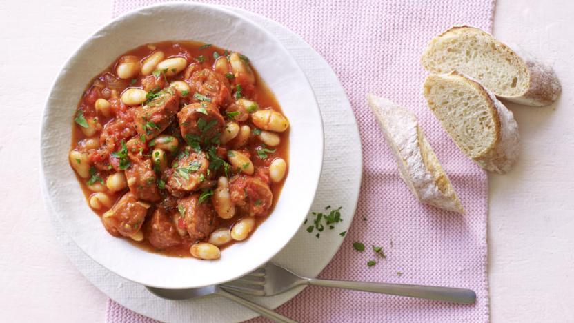

Simple chorizo and bean stew

Description
Each serving provides 517 kcal, 30g protein, 45g carbohydrates (of which 13g sugars), 21g fat (of which 7g saturates), 17g fibre and 2g salt.
Ingredients
- splash of rapeseed oil
- 110g/4oz cooked chorizo, cut into pieces, skin peeled off
- 1 onion, finely chopped
- 1 garlic clove, crushed
- 400g tin chopped tomatoes
- 600g/1lb 5oz tinned cannellini beans in water, drained
- handful fresh flatleaf parsley, roughly chopped
- crusty bread, to serve
- salt and freshly ground black pepper
Steps
- Heat the oil in a large lidded saucepan over a medium-low heat. Add the chorizo and cook until the oil starts to run from the chorizo.
- Add the onion and garlic and cover with the lid. Cook, stirring from time to time, until soft.
- Add the tomatoes and beans, stir well and cover, simmer for 10 minutes. Add a little water if the stew is too thick.
- Add the parsley, season to taste with salt and pepper and stir well.
- Serve in soup bowls, with crusty bread.